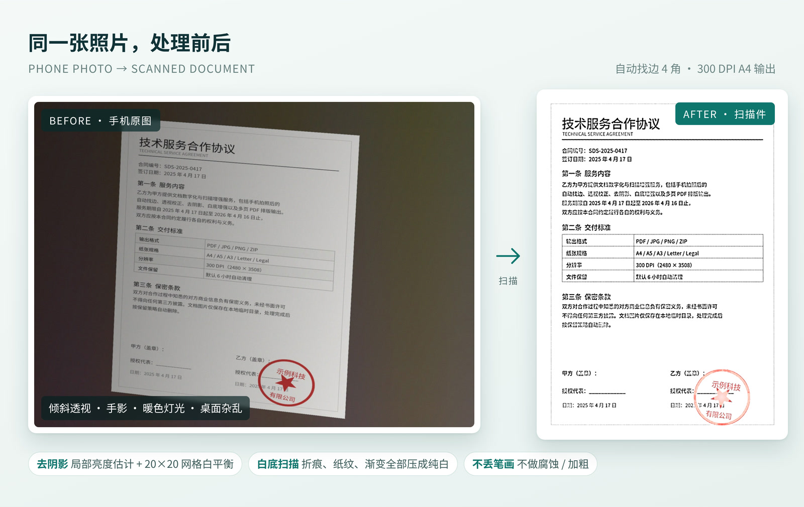
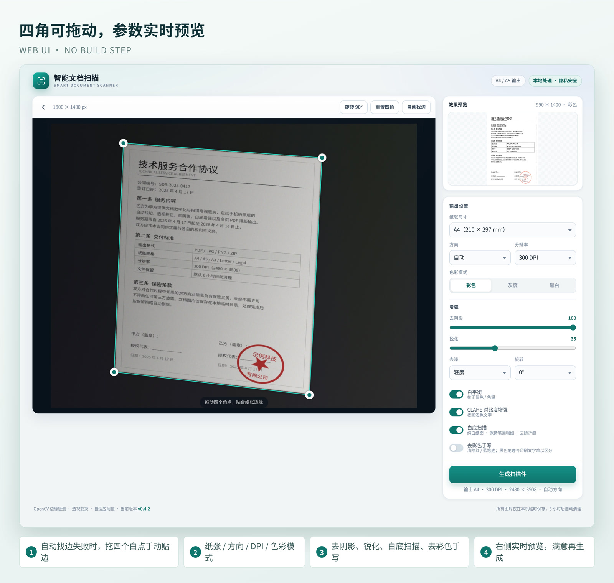
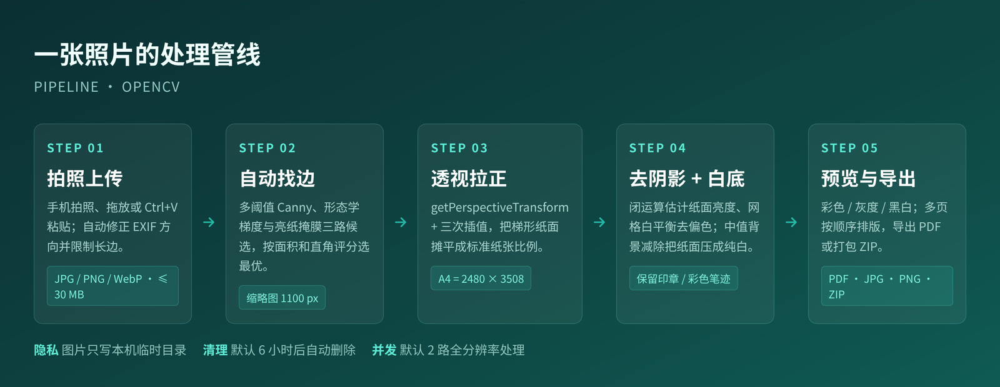
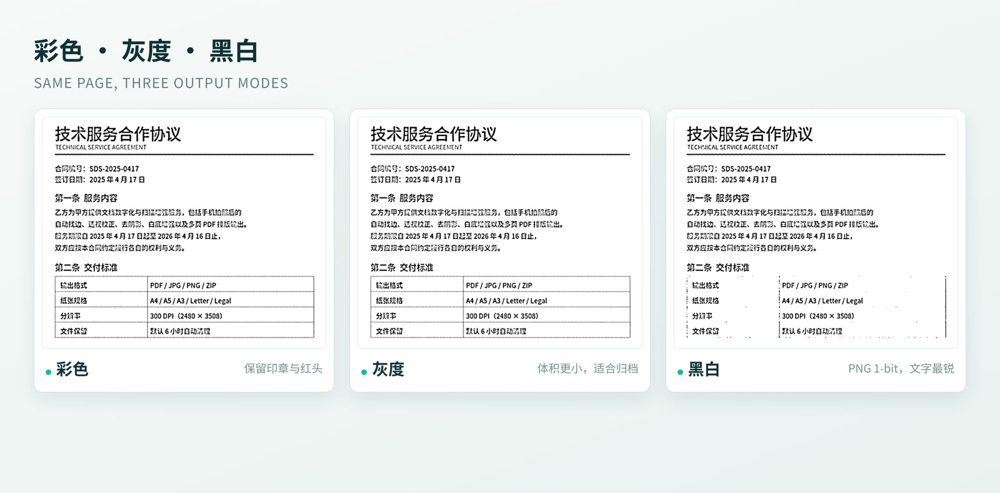
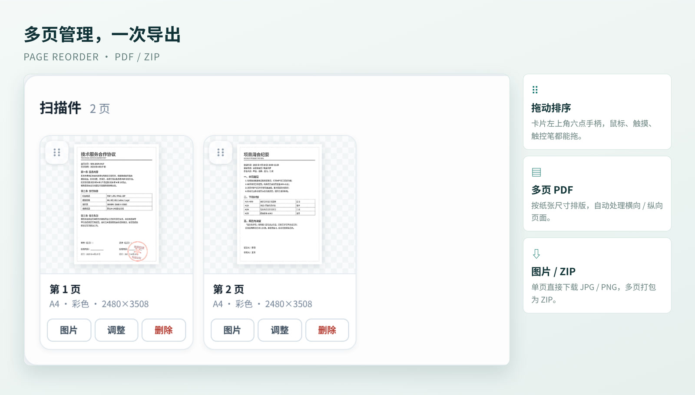

手机拍文档，最大的问题往往不是清晰度，而是歪、暗、乱：手持角度把纸拍成梯形，顶灯在纸面上留下一大片阴影，桌面的颜色、暖光、折痕一起进了画面。
市面上的扫描 App 效果很好，但通常要把文件传到云端，免费额度有限，偶尔还带水印。这个项目叫智能文档扫描（Smart Document Scanner），目标很简单：手机只负责拍照，找边、拉正、去阴影、白底增强、导出 PDF 全部在自己的服务器上完成。一个 Docker 容器，浏览器打开就能用。
一、先看效果
左边是一张故意拍得很"随意"的照片：纸是斜的，左侧有手影，桌面偏暖，还带一点传感器噪点。右边是处理结果：A4、300 DPI（2480 × 3508），纸面被压成纯白，表格线和文字还保持原来的粗细。

整个过程不需要手动框选：上传后自动给出四个角点，识别不准时再拖一下四个白点即可。
二、它具体做了什么
- 自动找边：多阈值 Canny、形态学梯度、亮纸掩膜三路候选，按面积和直角评分选最优；当整张照片几乎都是纸面时自动回退整图，避免把表格或文字块误裁成一张纸。
- 透视校正：四点透视变换加三次插值，把梯形纸面"摊平"成标准矩形，横向拍歪的页面也能拉正。
- 去阴影：用约 3.5% 短边的闭运算估计纸面亮度，再用 20 × 20 网格逐通道做白平衡。手影、折痕、渐变阴影和暖色 / 冷色灯光偏色一起压掉。
- 白底扫描：中值背景减除，把纸面、折痕和浅灰纹理压成纯白，文字压黑；只去除孤立暗点，不做腐蚀或加粗，笔画宽度尽量接近原件。
- 去彩色手写：局部色度 top-hat 检测红 / 蓝笔迹，按亮度擦除笔迹、保留被覆盖的印刷文字；印章、彩色 logo 这类紧凑的强色块会自动保留。
- 纸张与模式：A4 / A5 / A3 / Letter / Legal / 自动 / 自定义毫米尺寸，默认 300 DPI；彩色、灰度、黑白三种输出，白底扫描可以单独开关。
- 多页与导出：页面按顺序拖动排序，彩色 / 灰度导出 JPG，黑白导出 PNG，多页合成 PDF 或打包 ZIP。
三、界面：四角可拖，参数实时预览
左边是原图与四个角点，右边是效果预览和参数面板。纸张、方向、DPI、色彩模式、去阴影、锐化、去噪、白平衡、CLAHE、白底扫描、去彩色手写，改动任意一项都会重新生成预览；确认后再点"生成扫描件"加入页面列表。

实际使用流程很短：
- 选择图片、手机拍照，或直接拖放 / Ctrl+V 粘贴；
- 自动找边，必要时拖动四个角点；
- 选纸张、方向、DPI 和增强参数；
- 生成扫描件，重复添加多页；
- 拖动排序，导出 PDF 或图片。
四、一张照片的处理管线

其中效果最接近扫描仪的，是最后两步"去阴影 + 白底扫描"。去阴影做了两层估计：
- 第一层，闭运算：核要足够小，才能填掉文字笔画和窄折痕，得到一张平滑的纸面亮度图；核太大，会把渐变阴影也一起抬高。
- 第二层，网格白平衡：在 20 × 20 个局部块上分别取纸面颜色，逐通道把目标拉到纯白。闭运算残留的渐变、弯曲纸张的明暗、蓝色或黄色灯光，都会在这一步被抹平。
白底扫描则不再使用简单的全局阈值，而是：
- 在 LAB 的 L 通道上估计中值背景，窗口远大于文字笔画、但小于整页尺度；
- 用"背景 − 原亮度"做映射：差值接近 0 的纸面压成纯白，差值大的文字压成黑色；
- 按面积剔除孤立暗点，不做腐蚀或加粗；
- 只对高色度区域保留原始颜色，所以红色印章、红蓝笔迹不会被转成黑白。
正因为如此，浅色水印、纸张纹理和很宽的折痕会被一起压白。需要保留这些细节，或者文档本身有大面积深色插图时，把"白底扫描"关掉即可。
五、彩色、灰度、黑白

- 彩色：保留红头、印章和彩色标注，JPEG quality 92；
- 灰度：适合长期归档，体积更小；
- 黑白：1-bit PNG，文字边缘最锐，在 PDF 里以 Flate 压缩。
六、多页管理，一次导出

扫描件按卡片排列，拖动左上角六点手柄就能调整顺序，PDF 和 ZIP 会按新顺序导出。PDF 会按纸张尺寸排版，自动处理横向 / 纵向页面，不会把横页硬拉成竖页。
单页可以直接下载 JPG / PNG；多页一键打包成 ZIP，文件名按 scan-page-01.jpg 依次编号。
七、部署：一个容器
最省事的方式是直接拉取镜像。准备一个 compose.yaml：
services:
scanner:
image: ccr.ccs.tencentyun.com/mikewong/scanner:v0.4.2
container_name: smart-doc-scanner
restart: unless-stopped
ports:
- "8080:8000"
volumes:
- scanner-data:/data
volumes:
scanner-data:启动：
docker compose up -d然后在浏览器打开 http://服务器IP:8080。手机和服务器在同一个局域网时，手机浏览器直接访问这个地址，就能拍照上传。
也可以从源码本地构建：
git clone https://github.com/vanneswong/smart-doc-scanner.git
cd smart-doc-scanner
docker compose up -d --build常用的环境变量只有几个：
DATA_DIR：数据目录，容器内默认/data；FILE_TTL_HOURS：临时文件保留时间，默认 6 小时；MAX_UPLOAD_MB：单张上传上限，默认 30 MB；PROCESS_CONCURRENCY：同时处理数，内存紧张时设为 1。
八、隐私与边界
- 适合内网：应用本身没有登录鉴权，放在局域网或内网最合适；如果要暴露到公网，请套一层带认证的反向代理。
- 图片不落云：原图、预览、结果都只写本机临时目录，默认 6 小时后自动清理；页面列表只保存在浏览器内存里，刷新页面后需要重新生成。
- HEIC：iPhone 的 HEIC 通常会在上传前由浏览器转成 JPEG；服务器直接收到 HEIC 会返回"无法识别该图片格式"。
- 去手写的范围：只针对红 / 蓝等有颜色的笔迹。黑色签字笔、铅笔和印刷文字在颜色与亮度上无法可靠区分，不承诺自动清除。
- 白底扫描的取舍：它会把浅灰纹理、浅色水印和宽折痕一起压白；文档有大面积深色插图时，建议关闭白底扫描，保留原始背景。
写在最后
整个项目是 Python 3.12 + FastAPI + OpenCV + Pillow，前端是原生 HTML / CSS / JavaScript，没有 Node 构建步骤；单容器、非 root 运行，镜像约 120 MB。选择自托管，不是为了替代商业扫描 App，而是想让"拍完就再也不想整理"的纸质资料，有一个不出内网、随时能用的去处。
项目地址：github.com/vanneswong/smart-doc-scanner
当前版本：v0.4.2，变更记录见仓库中的 CHANGELOG.md。
本文截图与示例文档由项目实际处理管线生成；示例公司、人名与合同内容均为虚构。